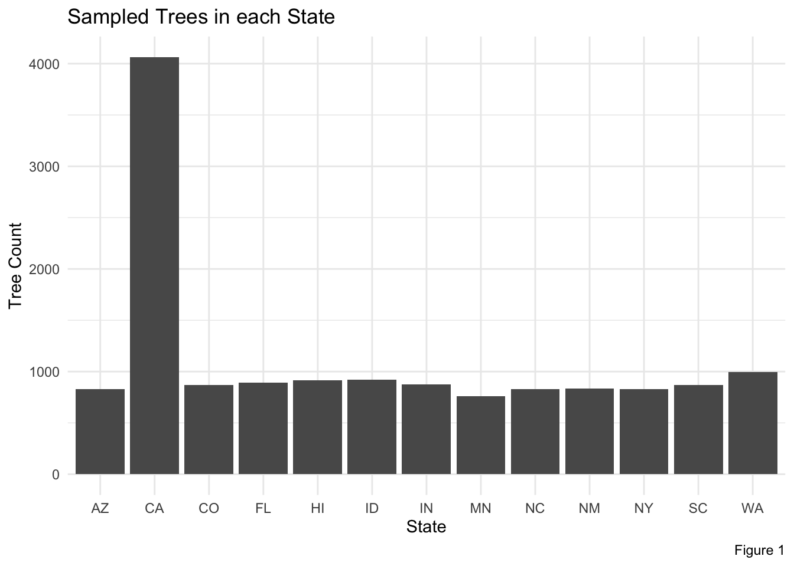

── Attaching core tidyverse packages ──────────────────────── tidyverse 2.0.0 ──
✔ dplyr 1.1.4 ✔ readr 2.1.5
✔ forcats 1.0.0 ✔ stringr 1.5.1
✔ ggplot2 3.5.1 ✔ tibble 3.2.1
✔ lubridate 1.9.4 ✔ tidyr 1.3.1
✔ purrr 1.0.2
── Conflicts ────────────────────────────────────────── tidyverse_conflicts() ──
✖ dplyr::filter() masks stats::filter()
✖ dplyr::lag() masks stats::lag()
ℹ Use the conflicted package (<http://conflicted.r-lib.org/>) to force all conflicts to become errors
Data <-read.csv("/Users/celestereid/Documents/PLAN372/PLAN372_2/plan372_hmks/HW 6/TS3_Raw_tree_data.csv") #importing dataData <- Data %>%#creating new variabled for the state and citymutate(State =str_extract(City, "([:alpha:]+)$"), Town =str_replace_all(City, "([:alpha:]+)$", " "), #getting rid of the state portion to make a city columncity =str_replace_all(Town, "[:punct:]", " ")) %>%#getting rid of leftover puntiation int he new city columnselect( -c(Town)) %>%#getting rid of my transition columnrename(City_State = City, #renaming my variables so they make senseCity = city)#Now group by City and Count all of them State_Count <- Data %>%group_by(State) %>%#grouping by statesummarize(Count =n()) #summarizing to see how many trees were in each state
Reid Consulting Studios:
Reid Consulting Studio’s analyst summarized key findings in the biodiversity and shade cover of trees to prepare analysis of A) the biodiversity of trees surveyed across states and B) how different tree genuses correspond to crown cover and potential shade abilities.
Our consulting firm highly values transparency and has included our representative’s coding work, should there be any questions on our methodologies.
Question 1: Sample Sizes by State
ggplot()+#graphing how many trees were sampled in each stategeom_col( data = State_Count, aes(State, Count))+#pulling datalabs(title ="Sampled Trees in each State",caption ="Figure 1")+ylab("Tree Count")+#adding labelstheme_minimal()

Figure 1 displays how many trees were associated with each state in the dataset. As is apparent in the data, California had the most sample by around four times any other state. The rests of the states hovered between around 750 and 1000 samples each.
Question 2: Cities in NC/SC
Carolinas <- Data %>%#filtering my dataset to just be in NC and SCfilter(State %in%c("NC", "SC"))Summary <- Carolinas %>%#getting just one row for each distinct(State, City) #unique(Carolinas$City) checking to make sure there really was only one city per stateSummary |>as_tibble()
# A tibble: 2 × 2
State City
<chr> <chr>
1 SC "Charleston "
2 NC "Charlotte "
Now that we have a sense of the distribution of our dataset, Reid Consulting Studios narrowed in on the geographic area most relevant to our case study, the North Carolina and South Carolina region. In the above table you can see that only one city was sampled in North Carolina and one in South Carolina. These cities were Charlotte in NC and Charleston in South Carolina. This is important to note as we continue our analysis as there may be bias in the limited distribution of trees across the state.
Question 3: Genera and Species part 1
#unique(Carolinas$ScientificName) #checking that each genus and species is only one word longCarolinas <- Carolinas %>%#extracting Genus, the first word in the Scientific Name columnmutate(Genus =str_extract(ScientificName, "(^[:alpha:]+)"), Genus =str_to_lower(Genus)) #ensuring that any differences in capitals won't be counted differentlyCarolina_genus <- Carolinas %>%#calculating the mean of the crown of each genusgroup_by(Genus) %>%#group by genussummarize( Crown_size =mean(AvgCdia..m.)) #find the mean crown size of each genus#display the maximum prettier and with the name of the genus from highest to lowest crown diameterCarolina_genus |>as_tibble() |>arrange(-Crown_size) |>select(Genus, Crown_size)
Reid Studio’s analyst calulated the crown size of trees in meters. This was done by genus, so when planting it is important to note that there may be variation among different species within the genus. Still, it appears the quercus genus has the largest crown size at 13.6 meters. If planting for shade cover quercus, platanus, or acer trees may be the cities best bet.
Question 4: Genera and Species part 2
#unique(Data$ScientificName) #getting a sense of the data we haveData <- Data %>%#extracting genus from the larger dataset mutate(Genus =str_extract(ScientificName, "(^[:alpha:]+)"), #extracting the first word aka the genusGenus =str_to_lower(Genus)) #putting everything in lower case to make sure any capitalization errors don't affect outputssp_species <- Data %>%#creating a new object to manipulate speciesmutate(ScientificName =str_replace(ScientificName, "\\.$", ""), #getting rid of any periods at the end of the datasets (important for those ending with sp. and cvs. )sp_test =ifelse(str_detect(str_to_lower(ScientificName), "sp$"), 1, 0), #identifying columns with sp at the end (these were columns with the genus listed but not the species)No_cultivar =str_replace_all(ScientificName, "('[:alpha:]+)'$", ""), #getting rid of all the cultivar names which were designated by being in ''No_genus =str_replace_all(No_cultivar, "^([:alpha:]+) ", ""), #getting rid of all the genus names at the front of the columnNo_x =str_replace_all(No_genus, "^x ", ""), #getting rid of any unneccisary xs denoting hybrid stausNo_var =str_replace_all(No_x, "var. ([:alpha:]+)$", ""), #getting rid of any variety indicators at the end of the strings No_subsp =str_replace_all(No_var, "subsp. ([:alpha:]+)$", ""), # removing of subspecies indicatorsNo_cvs =str_replace_all(No_subsp, "cvs$", ""), #removing the cvs indicatorSpecies =case_when( #creating the final species column sp_test ==1~paste(Genus, "unspecified"), #specifying that when the species is unkown, the column should read the genus name and the unspecified sp_test ==0~ No_cvs, #otherwise using the cleaned species nameTRUE~"NA" ))Identifed_only <- sp_species %>%#filtering to just the trees which we know the species offilter( sp_test ==0) %>%group_by(Genus) %>%#grouping by genussummarize(Species =n_distinct(Species)) #summarizing how many distinct/unique species names existed for each genusIdentifed_only |>as_tibble() |>arrange(-Species) #displaying from most species to least
# A tibble: 85 × 2
Genus Species
<chr> <int>
1 pinus 15
2 quercus 13
3 fraxinus 11
4 acer 7
5 populus 5
6 prunus 5
7 ulmus 5
8 eucalyptus 4
9 acacia 3
10 celtis 3
# ℹ 75 more rows
Back at the country-wide level (at least among states within our dataset), we were also interested in biodiversity. Our analyst calculated the number of species present for each genus around the country. There are further varieities within some of the genuses, and there were also a few trees which had only the genus, and not the species recorded. Our data analyst was and is not an expert on botnary, nor the naming of tree species and briefly consulted Prof. El-Khatabbi on the nomenclature of trees in the data set. Despite initial consultation, further research and examination of the data determined that trees ending in sp. meant that the species was not recorded but may have existed. For instance, within the dataset there existed the Prunus genus which had multiple species attached to it (cerasifera, carolniana, etc.), as well as a few “Prunus sp.” records. We ommitted the records containing sp. from our final species count, however our sp_species dataset includes these trees as their Genus, followed by the word “Unspecified” in the final species column. It was determined that nation wide the pinus genus of trees has the most variety of species, at 15. This was closely followed by the quercus genus (13 species), and the fraxinus genus (11 species). Our earlier data modeling suggested that the quercus genus would also offer the most shade cover. Further research into which species of quercus would be best for this may be prudent given the relatviely alrge variation within the genus.
Extra Credit
EC <- sp_species %>%select(Age, Genus, AvgCdia..m.)EC_agetable <- EC %>%#calculating the mean of the age of each genusgroup_by(Genus) %>%#group by genussummarize( Average_Age =mean(Age)) #find the mean age of each genus EC_agetable |>as_tibble() |>arrange(-Average_Age)
ggplot()+geom_point(data = EC_agetable, aes( Genus, Average_Age))+theme_classic()+labs(title ="Average Age of Tree Genuses",caption ="Figure EC-1")+ylab("Average Age (years)")+#adding labelstheme(axis.text.x =element_text(angle =90, size =7))
In order to better measure what trees are best suited to shade, and ensure no confounding variables, our analyst plotted the average age of each genus in our sample. For the most part these ages hovered around 15-40 years old, however there were also outliers over 60 years old or near 0. If doing future modeling, we would likely filter to exclude trees whose ages are less than 5, as they will not have had long enough to grow to have much of a crown at all. Because of the variations in this data, it is possible that age had an impact on the average canopy size of diferent genus in the previous question. Still, the quercus genus which we had found to have the highest average canopy size has an average age of about 29 years, which is in the mid-range of our data.
EC_fast <- EC %>%group_by(Genus) %>%#group by genussummarize( Average_Age =mean(Age), Avg_Crown =mean(AvgCdia..m.)) %>%mutate( Average_Age_color =case_when( #creating the final species column Average_Age <=20~"Less than 20", #specifying that when the species is unkown, the column should read the genus name and the unspecified Average_Age <=40~"20-40", Average_Age >=40~"Over 40", TRUE~"NA" ))ggplot(EC_fast, aes( Genus, Avg_Crown, color = Average_Age_color))+geom_point()+labs(title ="Genus Crown Size with Age Component",caption ="Figure EC-2")+ylab("Average Crown Diameter (m)")+#adding labelstheme_minimal()+theme(axis.text.x =element_text(angle =90, size =7))
When factoring in Average ages under 20 years old, the genus with the largest average crown is zelkova. In other words, if the city want a short term shade return on investment, zelkova or morus would be the way to go.